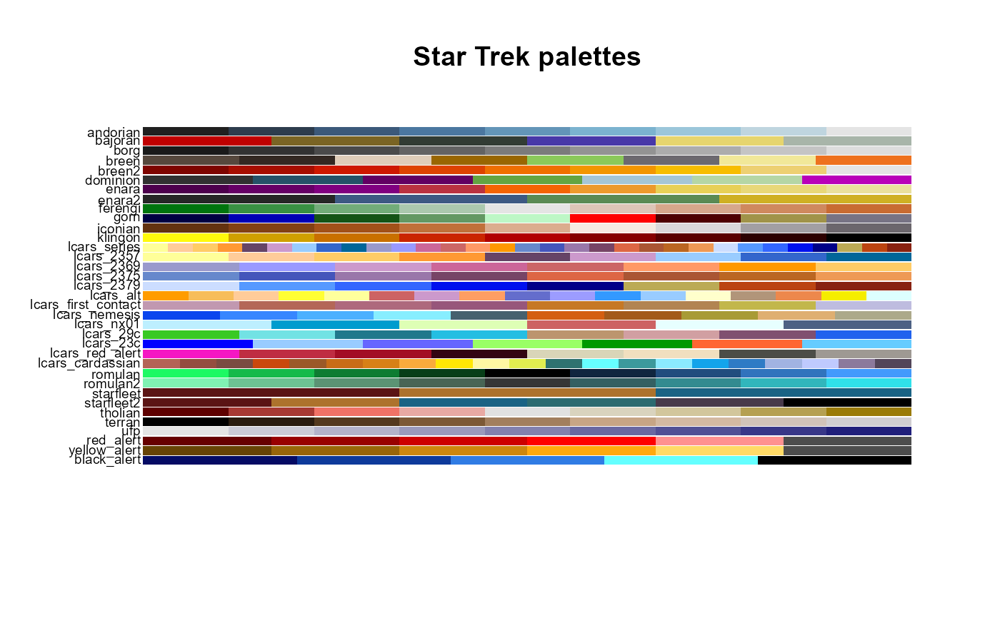

Return a predefined Star Trek color palette from the trekpals dataset.
trek_pal(palette = "starfleet", reverse = FALSE) view_trek_pals(palette)
| palette | character, name of predefined palette. If missing, return all available palette names. |
|---|---|
| reverse | logical, reverse color order. |
character vector of hex colors or palette names
Most of the palettes are qualitative, and not necessarily evenly spaced in terms of hue, saturation or brightness. This is because most of the palettes come from logos, symbols, insignia and other simple representations. However, several palettes have specifically been constructed as sequential or divergent if it made sense to do so based on the dominant colors present. Additional special functions exist for the subset of LCARS palettes.
trek_pal("lcars_2357")#> [1] "#FFFF99" "#FFCC99" "#FFCC66" "#FF9933" "#664466" "#CC99CC" "#99CCFF" #> [8] "#3366CC" "#006699"# leave palette blank to list available names: trek_pal()#> [1] "andorian" "andorian2" "bajoran" #> [4] "bajoran2" "borg" "breen" #> [7] "breen2" "dominion" "enara" #> [10] "enara2" "ferengi" "gorn" #> [13] "iconian" "kc_alliance" "klingon" #> [16] "lcars_series" "lcars_2357" "lcars_2369" #> [19] "lcars_2375" "lcars_2379" "lcars_alt" #> [22] "lcars_first_contact" "lcars_nemesis" "lcars_nx01" #> [25] "lcars_29c" "lcars_23c" "lcars_red_alert" #> [28] "lcars_cardassian" "romulan" "romulan2" #> [31] "starfleet" "starfleet2" "talaria" #> [34] "tholian" "terran_empire" "ufp" #> [37] "red_alert" "yellow_alert" "black_alert"# to view all palettes view_trek_pals()